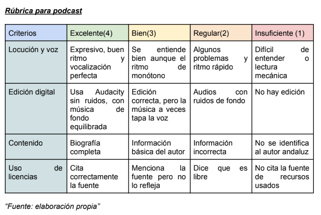

Rúbrica y Diana Autoevaluación
Finalmente, os muestro los instrumentos de evaluación con los que evaluaré vuestro proyecto.
En este caso, voy a utilizar una rúbrica para el "Padlet" y otra para el "podcast":
RÚBRICA PARA PADLET:

RÚBRICA PARA EL PODCAST:

Por último, no menos importante, me gustaría que os autoevaluéis. Para ello, os dejo una "Diana de Autoevaluación" para que deis color según el nivel que consideráis haber conseguido, es decir, vuestro aprendizaje real o nivel de logro gracias a la elaboración de este proyecto (colorear el centro=bajo y exterior=alto):